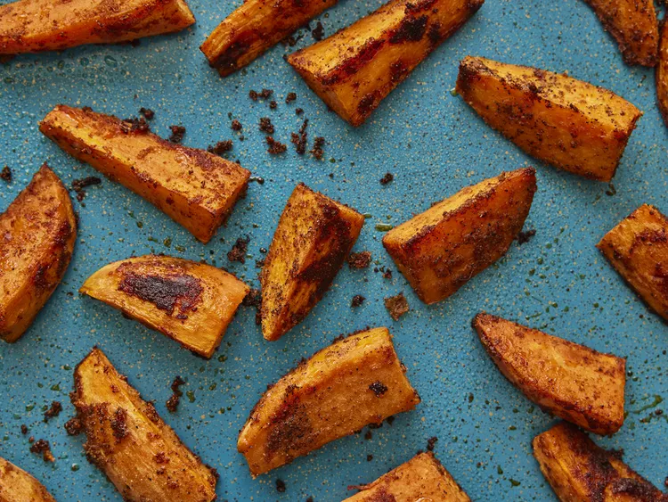

Roasted Sweet potatoes

Description
Here you find information on how to prepare tasty sweet potatoes
Recipe
Ingridients
- Sweet Potatoes
- Avocado Oil
- Cumin
- Paprika
- Garlic Powder
- Salt and Pepper
Steps
- Peel or don't peel the potatoes, it's up tp you
- Cut the potatoes into 1/2-inch cubes
- Toss the sweet_potatoes in oil and seasonings
- Roast at 425∘F(220∘C) for 30 to 35 minutes. Halfway through,
toss the cubes around so that all sides are evenly cooked